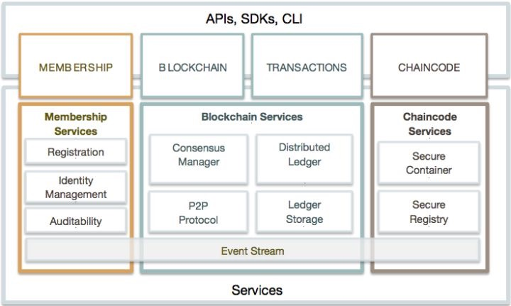

hyperledger-overview
Hyperledger Fabric 是 IBM 贡献给 Linux 基金会的商用分布式账本系统，自项目创立伊始就吸引了金融、银行、互联网、传统行业领域的巨头们的眼光。
Hyperledger Fabric 是基于 Golang 实现的可插拔的区块链系统，它主要面向企业之间或者企业多个部门之间提供服务。

- Membership 即成员管理服务，提供身份管理、证书校验。在 Fabric 中每个通讯组件都必须提供身份证明，每个事务的发起者会被永久记录在区块链上，审核人员可以追溯事务。
- Blockchain Services 即区块链服务，提供分布式一致性算法，维护全网数据一致，提供账本存储服务，基于 P2P 网络实现节点之间的通讯。
- Chaincode Services 即链码服务，智能合约在 Fabric 中称为链码。链码是操作状态数据库的唯一方法，大部分事务都是通过链码完成的。该部分提供链码的部署和运行环境。